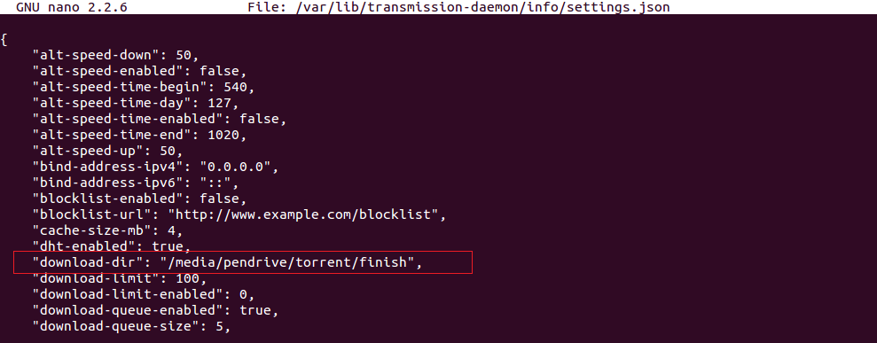
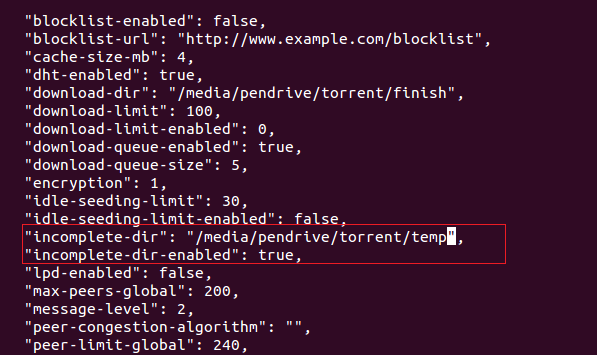
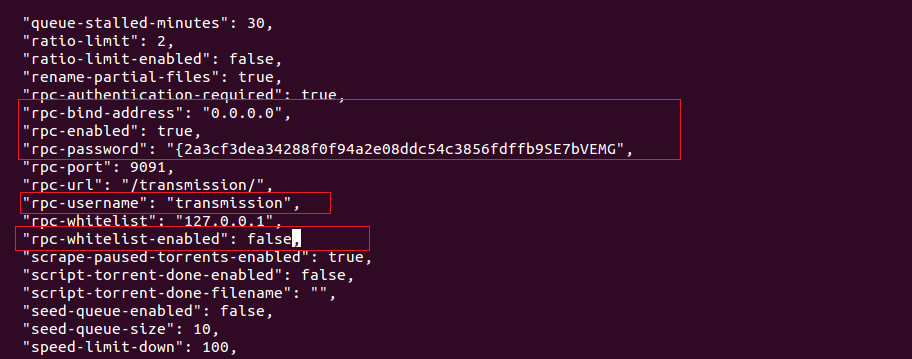
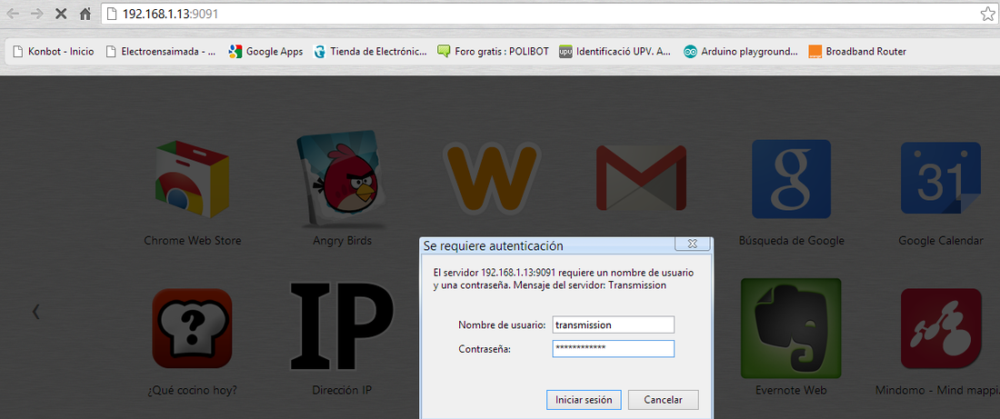

Instalación de Transmission
Transmission es un cliente torrent que consume pocos recursos que viene con una interfaz web para poder manejarlo, bastante que desear bajo mi punto de vista ya que no tiene muchas opciones, y las preferencias que se toquen a través de la web.
Bien empecemos instalando el paquete necesario para instalarlo hay que hacerlo como root o tener permisos momentáneos de root con la palabra sudo, comentar que dicho tutorial esta basado en Debian de modo que cualquier S.O basada en Debian servirá.
# apt-get update # apt-get -y install transmission-daemon
Sí todo ha ido bien tendrá que aparecer una imagen como esta.

Bien, ahora paramos el cliente para poder configurarlo despu&#eacute;s.
# /etc/init.d/transmission-daemon stop
Para poder alojar las descargas en el disco externo vamos a crear unas carpetas y darles permisos para tener seguridad y organización.
# cd /media/pendrive # mkdir torrent # cd torrent # mkdir finish # mkdir temp # cd /media # chmod -R 755 /media/pendrive
Configuración transmission
Ahora configuramos el archivo que utiliza transmission a nuestras necesidades, cambiar las rutas y puertos a según vuestras necesidades.
# nano /var/lib/transmission-daemon/info/json
En dicho archivo hay que modificar ciertos parámetros los más importantes son los siguientes
- download-dir: → es el directorio donde se guardará las descargas ya completadas.
- incomplete-dir: → es el directorio donde se irán guardando las descargas mientras no esten completadas.
- incomplete-dir-enabled: → sirve para activar o no el directorio que usará mientras se van descargando y no son completadas.
- rpc-enabled: → sirve para activar o no los servicios que utilizará transmission.
- rpc-bind-address: → por defecto tiene la dirección de localhost que es 127.0.0.1 hay que ponerla a 0.0.0.0 para indicar que cualquiera se puede conectar.
- rpc-username: → es el usuario con el que conectaremos con la interfaz web.
- rpc-password: → es la contraseña con el cuál se conecta a la interfaz web, por defecto es transmission y se encuentra cifrada, hay que ponerla entre comillas dobles.
- rpc-whitelist-enabled: → sirve para activar o no que una lista se pueda utilizar para conectarse por interfaz web.
- peer-port: → es el puerto del cliente.
- rpc-port: → es el puerto de la interfaz web (por defecto es 9091).
Aquí dejo unas capturas de lo que hay que modificar.   
Para dar más facilidades pongo también el contenido de dentro, modificarlo a vuestra manera. El archivo esta configurado para descargas públicas si se quiere utilizar para trackers privados hay que deshabilitar dht y pex-enabled poniendolo en false.
{
"alt-speed-down": 50,
"alt-speed-enabled": false,
"alt-speed-time-begin": 540,
"alt-speed-time-day": 127,
"alt-speed-time-enabled": false,
"alt-speed-time-end": 1020,
"alt-speed-up": 50,
"bind-address-ipv4": "0.0.0.0",
"bind-address-ipv6": "::",
"blocklist-enabled": false,
"blocklist-url": "http://www.example.com/blocklist",
"cache-size-mb": 4,
"dht-enabled": true,
"download-dir": "/media/pendrive/torrent/finish",
"download-limit": 100,
"download-limit-enabled": 0,
"download-queue-enabled": true,
"download-queue-size": 5,
"encryption": 1,
"idle-seeding-limit": 30,
"idle-seeding-limit-enabled": false,
"incomplete-dir": "/media/pendrive/torrent/temp",
"incomplete-dir-enabled": true,
"lpd-enabled": false,
"max-peers-global": 200,
"message-level": 2,
"peer-congestion-algorithm": "",
"peer-limit-global": 240,
"peer-limit-per-torrent": 60,
"peer-port": 51413,
"peer-port-random-high": 65535,
"peer-port-random-low": 49152,
"peer-port-random-on-start": false,
"peer-socket-tos": "default",
"pex-enabled": true,
"port-forwarding-enabled": false,
"preallocation": 1,
"prefetch-enabled": 1,
"queue-stalled-enabled": true,
"queue-stalled-minutes": 30,
"ratio-limit": 2,
"ratio-limit-enabled": false,
"rename-partial-files": true,
"rpc-authentication-required": true,
"rpc-bind-address": "0.0.0.0",
"rpc-enabled": true,
"rpc-password": "{2a3cf3dea34288f0f94a2e08ddc54c3856fdffb9SE7bVEMG",
"rpc-port": 9091,
"rpc-url": "/transmission/",
"rpc-username": "transmission",
"rpc-whitelist": "127.0.0.1",
"rpc-whitelist-enabled": false,
"scrape-paused-torrents-enabled": true,
"script-torrent-done-enabled": false,
"script-torrent&45;done-filename": "",
"seed-queue-enabled": false,
"seed-queue-size": 10,
"speed-limit-down": 100,
"speed-limit-down-enabled": false,
"speed-limit-up": 100,
"speed-limit-up-enabled": false,
"start-added-torrents"&58; true,
"trash-original-torrent-files": false,
"umask": 18,
"upload-limit": 100,
"upload-limit-enabled": 0,
"upload-slots-per-torrent": 14,
"utp-enabled": true
}
Bien una vez que se ha editado se guarda, se añade al arranque del sistema y se inicia.
# update-rc.d transmission-daemon defaults # /etc/init.d/transmission-daemon start
Listo ya se ha acabado rápido fácil e indoloro, ya se puede acceder a la web de la siguiente forma: XXX.XXX.XX.XX:9091 o el puerto que hayáis puesto
Nota: recordad abrir los puertos tanto de la interfaz web que es el 9091 como del transmission.
